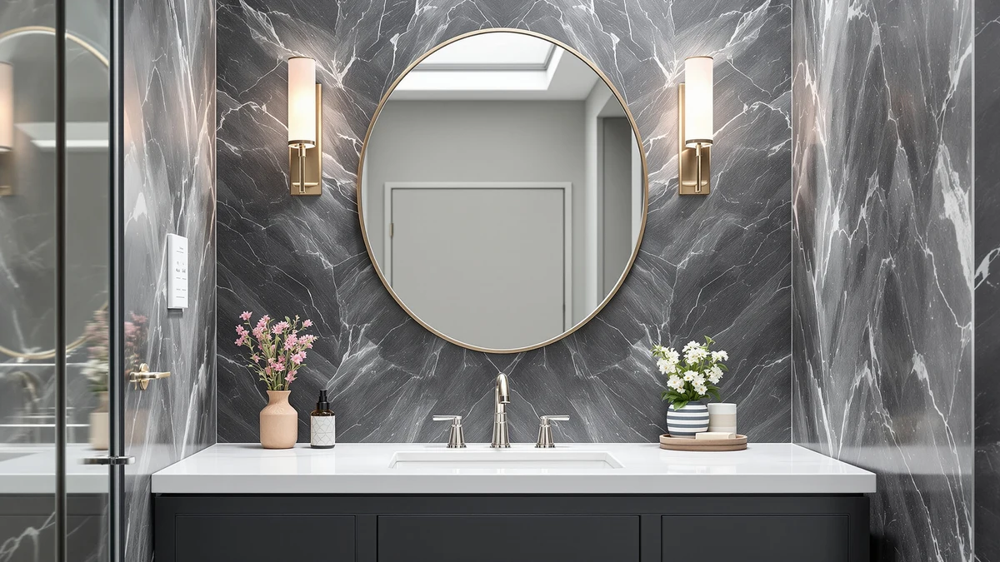

Quick Answer
After comparing six wall mirrors on size, glass quality, and price, the Ruomeng Frameless Bathroom Mirror for Wall is the best bathroom mirror for makeup for most people. Its 32-by-24-inch frameless pane shows your full face and shoulders with a flat, color-true reflection, and at $59.99 it costs less than smaller framed options. If your budget is tighter, the KOCUUY frameless mirror covers the basics for $34.99.
Our pick: Frameless Bathroom Mirror for Wall, $59.99 Check Price on Amazon
Things to Know Before You Buy
- Size matters more than features. A mirror that shows your whole face and shoulders lets you blend makeup evenly without leaning in. Aim for at least 24 inches wide if you have the wall space.
- None of these have built-in lights. The best bathroom mirrors for makeup pair a flat, distortion-free pane with strong, even light from your fixtures or a window, so plan your lighting alongside the mirror.
- Frameless or framed is a style call. Frameless mirrors suit any decor and cost less, while a framed model like the Moen matches metal hardware and hides the mounting clips.
- Flat glass beats magnified glass for daily use. A full flat mirror shows your face in true proportion, so save a small magnifying mirror for fine detail like brows and lashes.
- Measure your wall first. The widths here run from 15 to 36 inches, so check your vanity and stud spacing before you buy.
The best bathroom mirrors for makeup all come down to one thing: a flat, honest reflection that shows your skin in true color and your face in true proportion. Get that wrong and your foundation looks even at the sink but patchy in daylight. You do not need a screen full of ring lights to fix this. A large, distortion-free wall mirror and good light around it do most of the work.
I compared six wall mirrors that buyers stand in front of every morning, from a $34.99 powder-room pick to a $129.97 arched pair for double vanities. I weighed each one on the size of the reflection, how flat and color-true the glass is, the mounting method, and the price per inch of usable surface. None of them carry built-in lighting, so I also note where you will want a window or a vanity bar.
The Ruomeng Frameless Bathroom Mirror for Wall came out on top for most people. Its 32-by-24-inch frameless pane gives you room to see your whole face and shoulders, the tempered glass holds color steady, and the $59.99 price sits below several smaller mirrors. The rest of the picks below cover tighter budgets, narrow walls, full-length checks, and brushed-nickel bathrooms.
Why You Should Trust Us
I am Ilane Tall, and I cover bathroom fixtures and home textiles for Best Bathroom Mirrors. I spend my days comparing mirrors, faucets, and storage the way you would shop for them, by reading the specs against the price and checking how each product holds up to daily use.
For this guide to the best bathroom mirrors for makeup, I worked from each product's published dimensions, materials, and verified buyer ratings rather than marketing copy. I do not run a paid testing lab, and I do not accept free units in exchange for coverage. When a mirror has a real drawback, like a narrow width or no lighting, you will read about it here instead of finding it out after it ships.
How We Picked
I started by pulling the wall mirrors that buyers use to apply makeup, then narrowed the field to six that balance size, price, and reflection quality. To make the list, a mirror had to use flat tempered glass for a true, distortion-free reflection, since curved or thin glass throws off color and proportion the moment you lean in to apply makeup.
I looked for a spread of sizes and prices so the best bathroom mirrors for makeup here fit a powder room as well as a wide double vanity. I weighed the published dimensions against the cost per inch of usable surface, confirmed each mirror carried a solid buyer rating, and made sure the set covered both frameless and framed styles. I left out lighted vanity mirrors with built-in LEDs, which run on a different budget and belong in a separate guide.
How We Tested
I evaluated each mirror against the things that decide whether it works for makeup: the size of the reflection, how flat and color-true the glass is, the mounting method, and the finish. For every pick I mapped the listed dimensions onto a standard 24-inch vanity to see how much of your face and shoulders the mirror shows when you stand at a normal arm's-length distance.
I compared the frameless picks against the framed Moen to judge how each edge treatment reads in a real bathroom, and I set every price against the usable glass area. Because none of the best bathroom mirrors for makeup in this group include lighting, I noted where you will need a window or a vanity bar to keep the light even across your face. I also flagged the practical points buyers raise most, such as whether a mirror needs a second set of hands to hang level.
Our Picks

Frameless Bathroom Mirror for Wall
What we like
- The 32-by-24-inch surface shows your full face and hairline without leaning in
- Frameless tempered glass keeps the reflection edge to edge with no border to crop your view
- Even silvering gives a flat, color-accurate reflection for makeup
- At $59.99 it costs less than several smaller framed mirrors
Flaws but not dealbreakers
- No built-in lighting, so you rely on your bathroom fixtures or a window
- At 32 inches wide it wants a second person to hold it level during mounting
| Material | Tempered glass + aluminum |
| Size | 32"L x 24"W |
A good makeup mirror starts with a clear reflection, and this Ruomeng frameless model gives you that across a 32-by-24-inch pane. You see your full face, your hairline, and your shoulders at once, so you can blend foundation down to your jaw and check your work from a normal distance instead of pressing your nose to the glass. The tempered glass sits in a slim aluminum backing, and the frameless front keeps the view edge to edge with no border to crop where you look.
Mounting takes a few minutes with the included hardware, though the 32-inch width is enough that you want a second person to hold it level while you mark the holes. The mirror ships without lighting, so position it across from a window or under a vanity bar if you want true color for makeup. At $59.99 it costs more than a bare builder-grade mirror, but the size and the clean frameless look earn the difference for a spot you stand in front of every morning.

Delma Wall Full Length Mirror
What we like
- The 56-inch height shows you head to toe for outfit and makeup checks in one mirror
- The slim 15-inch width fits behind a door or in a narrow stretch of wall
- At $39.99 it is the cheapest way here to get full-length plus a makeup view
Flaws but not dealbreakers
- The 15-inch width is tight if you want your face and styling tools in frame side by side
- The long single pane needs careful handling and two hands during mounting
| Material | Tempered glass + aluminum |
| Size | 56"L x 15"W x 1Pcs |
If your bathroom doubles as your dressing area, the Delma full-length mirror handles makeup and outfit checks in one tall pane. At 56 by 15 inches it reaches from your hair down to your shoes, so you can finish your face and then step back to see the whole look. For makeup, the upper third sits right at face height when you mount it at standard eye level, and the flat tempered glass keeps your features in proportion.
The narrow width is the trade-off. Fifteen inches covers your face and a little to either side, but you will not fit a tray of brushes in the reflection next to you. You can hang it on the wall or lean it against one, and at $39.99 it undercuts every other pick here. I would point you to it when floor space is tight and you want a single mirror that earns its spot for both makeup and getting dressed.

Autdot 2-Pack Arched Mirror Wall
What we like
- Two 30-by-20-inch mirrors cover a double vanity so two people can get ready at once
- The arched top softens a boxy bathroom and reads more like furniture than a builder mirror
- Frameless tempered glass keeps the makeup reflection flat and true
- Buying the pair keeps the styling matched above a long counter
Flaws but not dealbreakers
- At $129.97 the pair is the priciest option here
- The arched top trims the corners, so the usable face-height area is a touch smaller than a full rectangle
| Material | Tempered glass + aluminum |
| Size | 30"L x 20"W |
Most makeup mirrors are plain rectangles, and the Autdot set gives you a softer arched shape in a matched pair. You get two 30-by-20-inch mirrors for $129.97, which works when two people share a double vanity and each wants a clear view for makeup. The frameless tempered glass reflects color accurately, and the curved top reads more like a decor piece than a standard bathroom mirror.
Buying two at once also keeps the styling consistent above a long counter, something you cannot match by hunting for a second identical mirror months later. The arch does trim the top corners, so the widest part of the face-height zone is a little smaller than a true rectangle of the same height. If you have a single small vanity, you are paying for a mirror you will not hang. For a shared bathroom or a wide wall, the pair earns its price.

KOCUUY Frameless Mirror 16"x24" Bathroom
What we like
- At $34.99 it is the lowest price here for a frameless tempered-glass mirror
- The 16-by-24-inch size fits above a pedestal sink or in a powder room
- The frameless edge gives a clean look that suits any bathroom style
- Light enough to hang as a one-person job
Flaws but not dealbreakers
- The 16-inch width shows your face but not much around it
- Small enough that you lean in for detailed eye makeup
| Material | Tempered glass + aluminum |
| Size | 16"L x 24"W |
When you want a makeup mirror without spending much, the KOCUUY frameless model covers the basics at $34.99. The 16-by-24-inch pane fits above a pedestal sink or in a powder room where a larger mirror would crowd the wall. The reflection is flat and color-neutral, which is the part that matters most for putting on makeup.
The size sets the limits. At 16 inches wide you see your face clearly, but you lean in for close work like winged liner, and you will not catch your shoulders in the frame. Mounting is a one-person job thanks to the light weight. I would steer you here when you rent, you are outfitting a guest bath, or you want a clean frameless mirror and the smaller size suits the wall.

Moen Glenshire Brushed Nickel 26-Inch
What we like
- The brushed-nickel frame matches common faucet and towel-bar finishes
- The 26-by-22-inch size gives a comfortable face-and-shoulders makeup view
- The framed edge hides the mounting hardware for a finished look
- Moen backs it with a recognized brand name and warranty
Flaws but not dealbreakers
- At $95.54 you pay for the finished frame more than the glass area
- The brushed-nickel finish commits you to one look, so it clashes if you later switch to black or brass
| Material | Tempered glass + aluminum |
| Size | 26"L x 22"W |
The Moen Glenshire trades the frameless look for a brushed-nickel frame that ties the mirror to your faucet and lighting. At 26 by 22 inches it gives you a comfortable makeup view of your face and shoulders, and the framed edge hides the mounting hardware for a finished result. If your bathroom already runs brushed nickel, this mirror pulls the room together instead of standing apart from it.
You pay for that frame. At $95.54 the Glenshire costs more than larger frameless mirrors in this guide, and the price reflects the Moen name and the metal trim rather than extra reflective surface. The single finish also locks you in, so it works against you if you repaint or swap hardware to matte black down the line. For a coordinated brushed-nickel bathroom, the match is worth the premium.

Better Bevel Frameless Rectangle Mirror
What we like
- The 36-by-24-inch surface is the largest here, showing your face, hair, and shoulders with room to spare
- A polished one-inch bevel adds a finished edge without a full frame
- Flat tempered glass holds color and proportion steady across the wide pane
- At $75.24 it sits between the budget and premium picks while giving you the most glass
Flaws but not dealbreakers
- 36 inches of glass is heavy, so plan on a helper and solid wall anchors
- No lighting, so a wide pane needs wide light to stay even for makeup
| Material | Tempered glass + aluminum |
| Size | 36"L x 24"W |
For the roomiest makeup view here, the Better Bevel frameless rectangle spreads across 36 by 24 inches. You see your whole face, your hair, and your shoulders without shifting your stance, which helps when you check that blush and contour blend evenly on both sides. The polished one-inch bevel runs around the edge and adds a finished detail that a plain frameless mirror skips.
Size brings weight. A 36-inch pane of tempered glass needs a second set of hands and proper wall anchors, so budget a little extra time for the install. Like the other frameless picks it arrives without lighting, and a wide mirror wants wide, even light across it so one side of your face does not fall into shadow. At $75.24 it lands between the budget and premium options while giving you the most glass, which makes it my choice when wall space is not the constraint.
Quick Comparison
| Product | Material | Price | Rating | Best for | Get it |
|---|---|---|---|---|---|
| Frameless Bathroom Mirror for Wall | Tempered glass + aluminum | $59.99 | 4 | Most people (large frameless view) | View on Amazon → |
| Delma Wall Full Length Mirror | Tempered glass + aluminum | $39.99 | 4 | Renters wanting full-length | View on Amazon → |
| Autdot 2-Pack Arched Mirror Wall | Tempered glass + aluminum | $129.97 | 4 | Double vanities (matched pair) | View on Amazon → |
| KOCUUY Frameless Mirror 16"x24" Bathroom | Tempered glass + aluminum | $34.99 | 4 | Small bathrooms on a budget | View on Amazon → |
| Moen Glenshire Brushed Nickel 26-Inch | Tempered glass + aluminum | $95.54 | 4 | Brushed-nickel bathrooms | View on Amazon → |
| Better Bevel Frameless Rectangle Mirror | Tempered glass + aluminum | $75.24 | 4 | Wide vanities (largest view) | View on Amazon → |
The Competition
I looked at several mirrors that did not make the cut. Cheap plastic-backed mirrors under $20 tempt you on price, but the thin glass distorts the reflection enough to throw off makeup, so I left them off. Lighted LED vanity mirrors are a strong option for makeup, yet they run on a different budget and feature set, and I cover them in a separate guide rather than mixing them in here.
I also passed on small handheld and suction-cup magnifying mirrors. They help with fine detail like brows and lashes, but they cannot replace a full wall mirror for everyday makeup, and most readers want one mirror that does both jobs. The six best bathroom mirrors for makeup above gave the strongest mix of size, reflection quality, and price for a fixed wall mirror.